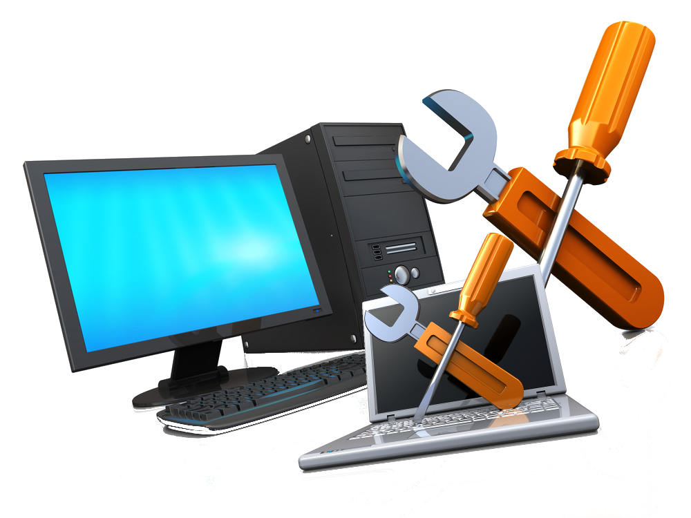

Ensamblaje del PC
Publicado por Franklin Solórzano – Junio 2025
Todo trabaja perfectamentamente bien, cuando las partes internas del computador estan en sular, conoce aquí como armar correectamente tu compurador.:
- Paso 1. Prepara el Case: Lugar donde se alojan las partes internas del PC.
- Paso 2. Acopla la Tajeta Base al case: Parte principal donde se conectan más elementos.
- paso 3. Instala el Microprocesadora ala placa base: Procesa la información que ingresa al computador.
- paso 4. acopla el Coolere la Microprocesaro: Permite que el microcprocesador se mantenga en una temperatura estable
- Paso 5. Insta y conectas los Discos Duros o SSD: Dispositivos de almacenamiento.
- Paso 6. Conecta las Memorias RAM: Lugar donde se alojan los programas para funcionar temporalmente en el pc.
- Paso 7. Conecta las tarjetas de expación: Tarjetas que permiten que el computador tenga otras capacidades.
- paso 8. conectas los cables de energia y los de datos: Permite que prtendan y fluyan los datos entre los lementos
- paso 9. Conecta los cables del Panel Frontal: Pertique el el computador encienda, se reinicie y muestre indicadores (Diodos Led)
- paso 10. Cierra el case y has tu primera prueba de encendido del PC: Compruba que todo este bien conectado,
Comenta de conoces otra parte de la fuente de poder.